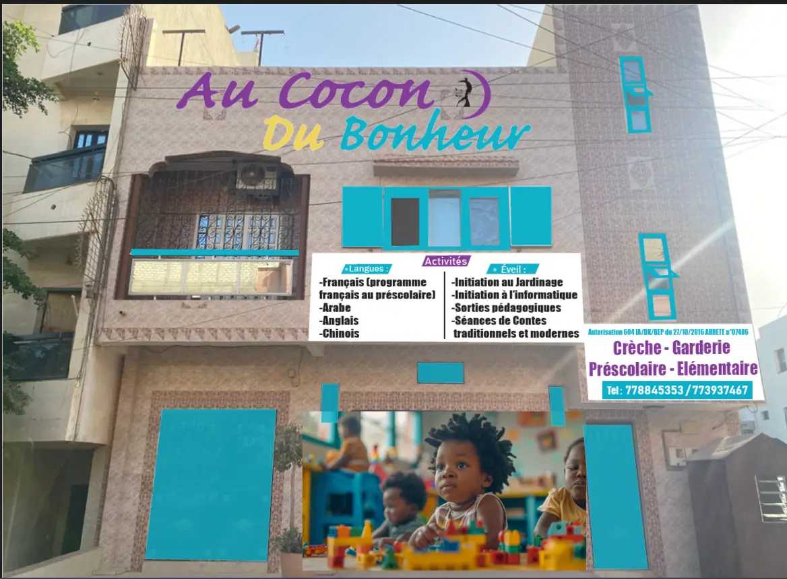
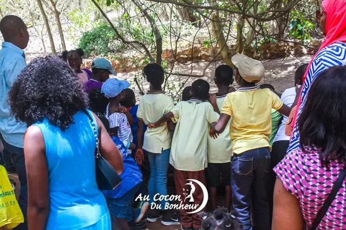
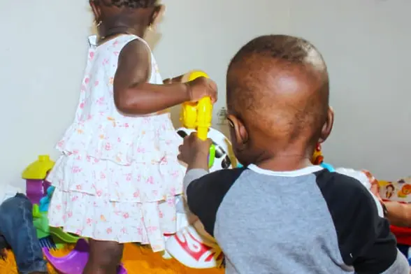
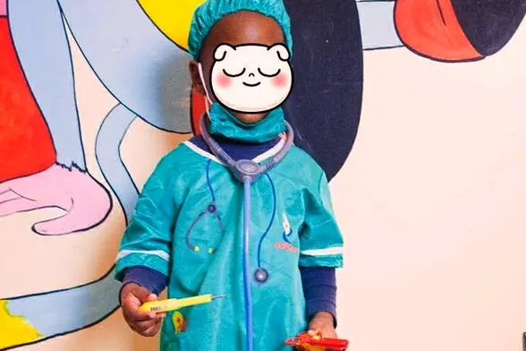
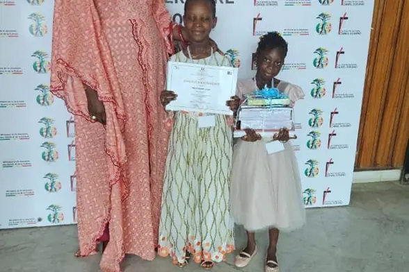

École ouverte en 2016 · autorisation 604 IA/DK/BEP
Un cocon pour grandir.
Crèche, garderie, préscolaire et élémentaire à Ouakam, Dakar. Dès 3 mois.
Appeler le 77 884 53 53
Nos quatre cycles
De la crèche à l'élémentaire, sur un seul site à Ouakam.
-
Photo de la salle à venir
Crèche
Éveil, motricité et sieste encadrés par une équipe formée à la petite enfance.
-
Photo de la salle à venir
Garderie
Les premiers repères de la vie en groupe : jeu libre, comptines, autonomie.
-
Photo de la salle à venir
Préscolaire
Préparation à la lecture, au tracé et au calcul, au rythme de chaque enfant.
-
Photo de la salle à venir
Élémentaire
Programme complet, classes suivies de près, point régulier avec les familles.
Langues
- Français programme français au préscolaire
- Arabe
- Anglais
- Chinois
Éveil
- Initiation au jardinage
- Initiation à l'informatique
- Sorties pédagogiques
- Contes traditionnels et modernes
Services assurés
- Cantine I
- Transport II
- Garderie III
- Préscolaire IV
La vie de l'école
Sorties, ateliers, journées spéciales. Photos prises à l'école.
-

Réserve aux tortues
Une sortie nature encadrée, à la découverte des tortues et de leur habitat.
-
École de la mer
Atelier de sensibilisation au littoral, animé par une intervenante extérieure.
-

Crèche
Les journées des tout-petits : éveil, jeu, repas et sieste dans un espace dédié.
-
Base aérienne
Visite guidée de la base, en tenue d'école, pour les classes élémentaires.
-
Une question sur une sortie, un horaire, un tarif ?
Appeler le 77 884 53 53 -

Déguisements
La journée costumée de fin d'année, préparée en classe pendant plusieurs semaines.
-

Remise de prix
La cérémonie annuelle, avec les familles, en présence des autorités académiques.
Pourquoi les familles nous confient leurs enfants
- I Ouverte depuis 2016 Autorisation 604 IA/DK/BEP — arrêté n°07486 du 27/10/2016.
- II De 3 mois à 11 ans, au même endroit Quatre cycles sur un seul site : l'enfant ne change pas d'école en route.
- III Cantine, transport et garderie assurés La journée est couverte du matin au soir, sans solution de repli à trouver.
- IV Remise des prix annuelle Une cérémonie avec les familles, en présence des autorités académiques.
Deux familles ont accepté de témoigner en vidéo. Les vidéos seront ajoutées dès réception.
Appeler le 77 884 53 53Parlons de votre enfant
Les tarifs sont donnés par téléphone ou lors de la visite.
Ouakam, Dakar · ouvert du lundi au vendredi dès 7h30